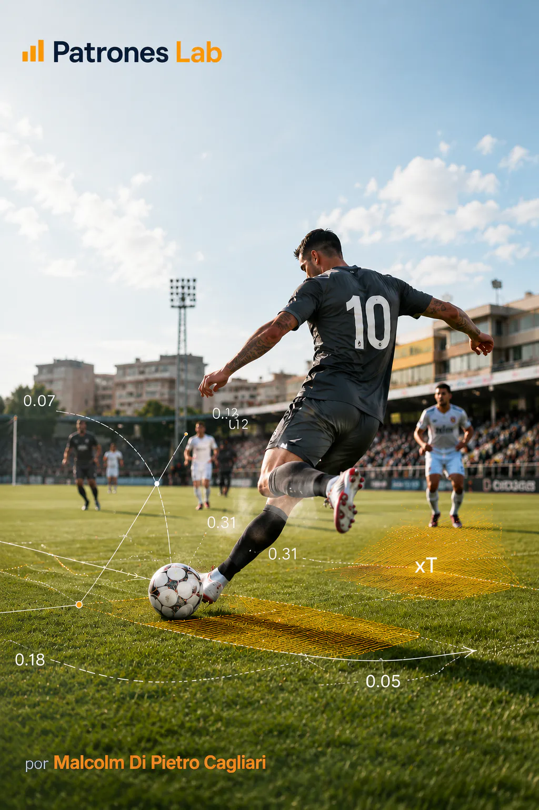

机器学习 · 项目 06

项目 07 · 足球分析
足球概率分析 · 预期威胁（xT）
利用 StatsBomb 数据分析 2018 年俄罗斯与 2022 年卡塔尔世界杯的进攻威胁。按球场区域估计五个动作内进球的概率，衡量传球和带球如何提高或降低该值，从而比较不同球员创造机会的贡献。
背景与目标
球进入不同区域会改变进攻威胁。穿透防线的传球和向禁区推进的带球都可能创造更有利的进攻位置。项目衡量这种变化，识别组织进攻时提高威胁的动作。
分析采用 StatsBomb 的比赛事件数据，覆盖 2018 年俄罗斯世界杯和 2022 年卡塔尔世界杯各 64 场比赛。每条记录包含动作类型、位置、球员、球队和球权信息，可据此估算各区域的进攻威胁，并比较不同球员、国家队及比赛时段的表现。
为球场各区域赋值，衡量传球或带球从一区到另一区造成的威胁变化。借此找出贡献最大的动作，累计各球员贡献，并追踪球队整场进攻走势。
模型与动作估值
事件整理与球场划分
通过 StatsBombPy 取得两届世界杯事件，按比赛与控球回合整理。纳入持球队的传球、带球推进、过人和射门，重点分析运动战，点球及点球大战单独处理。
球场划为 12 列 8 行共 96 个区域，每区占数据坐标系中的 10 × 10 单位，便于计算各区威胁并相互比较。
五个动作内进球的概率
指标记录同一次控球是否在最多五个进攻动作内进球，首个动作也计入。逐区计算满足条件的动作比例，称为 PE5-Gol，表示这些序列中观测到的进球频率。
分区估计威胁
PE5(z)=\frac{G_5(z)}{N(z)}
G5(z) 统计从区域 z 的动作开始、五个动作内进球的次数。N(z) 为该区域记录的动作总数，两者相除得到两届世界杯的观测比例。
PE5-Gol 是本项目采用的预期威胁（xT）变体，根据五个动作序列中观测到的进球为各区域赋值。传统 xT 模型采用不同公式，考虑射门及球在区域之间移动的概率。
传球与带球推进的贡献
计算 96 个区域的威胁值后，根据起止位置评估成功传球和带球，逐次以终点区域的值减去起点区域的值。
单个动作引起的威胁变化
\Delta PE5(a)=PE5(z_{\text{终点}})-PE5(z_{\text{起点}})
球到达威胁更高的区域时变化为正，到达更低区域时为负；两区值相同则为零。
即使一次进攻没有射门，也能衡量推进过程中威胁如何变化。计算涵盖两届世界杯的 204,694 次传球与带球，可按动作、球员、球队和比赛分析。
球员累计贡献
累计各球员传球和带球引起的威胁变化，得到其贡献。另行区分提高及降低威胁的动作，以展示球员如何参与球队的进攻推进。
球员净贡献
PE5_{\text{总计}}(j)=\sum_{a\in A(j)}\Delta PE5(a)
A(j) 是球员 j 被纳入分析的传球和带球动作集合。求和结果表示其在研究时段对指标的净贡献，所有球员按同一标准计算。
交付与收获
展示 96 个球场区域的威胁地图、球员对比以及对威胁影响最大的动作。图表说明哪些传球和带球提高威胁最多，以及累计值如何随比赛变化。
2022 年 12 月 18 日阿根廷与法国的决赛展示了该指标在一场比赛中的应用。分析比较两队的贡献，并结合进球时刻观察累计威胁的走势和每五分钟的变化。用 mplsoccer 在球场图上绘制传球和带球推进，用 Plotly 展示威胁随时间的变化。
决赛中，按 PE5-Gol 计，传球和带球的净贡献阿根廷为 1.670，法国为 1.042，可用于比较双方推进导致的威胁变化。
可将同一方法用于其他球员、球队和比赛。加入结构相同的新事件后，即可更新分区值，并用统一标准重新计算各动作的贡献、比较比赛。